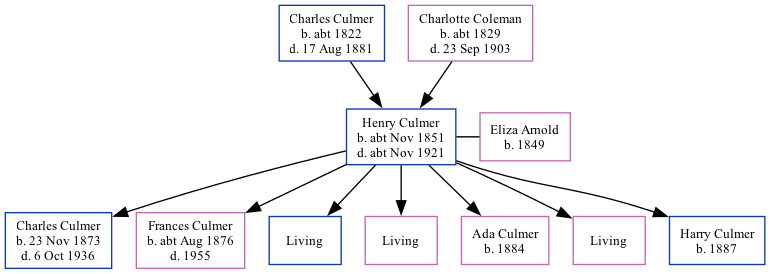

Henry Culmer cNov 1851 - c1921
[ Home ] | [ Calendar ] | [ Surnames Index ] | [ Family History ]A coal carman and the child of Charles Culmer (a farm waggoner) and Charlotte Coleman (a pauper), Henry Culmer, the great-great-uncle of <a href="I1.html">Nigel Horne</a>, was born in Monkton, Kent, England <i>c.</i> Nov 1851<span class="citation">1,2,3,4,5</span>, was baptized there on Nov 23, 1851 and married Eliza Arnold (with whom he had 7 children: <a href="I2947.html">Charles James</a>, <a href="I2942.html">Frances Susannah</a>, <a href="I2943.html">Percy Frederick</a>, <a href="I2944.html">Mary Jane</a>, <a href="I2945.html">Ada</a>, <a href="I2941.html">Sarah Eleanor</a> and <a href="I2946.html">Harry</a>, along with 3 surviving children) at St Mildred's Church, Preston, Wingham, Kent, England on Apr 6, 1872<span class="citation">6</span>.</p><p>Throughout his life, Henry lived in several places: at his birthplace in 1861<span class="citation">1</span>; in Littlebourne, Kent in 1871<span class="citation">2</span>; in Westmarsh, Kent on Apr 5, 1891<span class="citation">7</span>; on Albert Road, Woolwich, London, England on Mar 31, 1901<span class="citation">8</span>; and in Plumstead, London on Apr 2, 1911. <p>He died <i>c.</i> Nov 1921 in Bromley, Kent<span class="citation">4</span>.
Parents
- Charles was born c. 1822
- Charlotte was born c. 1829
Children
- Charles James was born on Nov 23, 1873
- Frances Susannah was born c. Aug 1876
- Ada was born in 1884
- Harry was born in 1887
Citations
- 1861 England Census Online publication - Provo, UT, USA: The Generations Network, Inc., 2005.Original data - Census Returns of England and Wales, 1861. Kew, Surrey, England: The National Archives of the UK (TNA): Public Record Office (PRO), 1861. Data imaged from the National
- 1871 England Census Online publication - Provo, UT, USA: The Generations Network, Inc., 2004.Original data - Census Returns of England and Wales, 1871. Kew, Surrey, England: The National Archives of the UK (TNA): Public Record Office (PRO), 1871. Data imaged from the National
- England & Wales births 1837-2006 - Findmypast
- England & Wales deaths 1837-2007 - Findmypast
- England & Wales, FreeBMD Birth Index, 1837-1915 Online publication - Provo, UT, USA: The Generations Network, Inc., 2006.Original data - General Register Office. England and Wales Civil Registration Indexes. London, England: General Register Office. © Crown copyright. Published by permission of the Cont
- Kent, Canterbury Archdeaconry Marriages - Findmypast
- 1891 England, Wales & Scotland Census - Findmypast (was age 59 and the head of the household)
- 1901 England, Wales & Scotland Census - Findmypast (was age 50 and the head of the household)
Media
England & Wales marriages 1837-2005 - BMD/M/1872/2/AZ/000065/076
Kent, Canterbury Archdeaconry marriages 1538-1928 - GBPRS/CANT/M/97051009/1
Kent, Canterbury Archdeaconry banns 1754-1928 - GBPRS/CANT/M/94069488/1
1901 England, Wales & Scotland Census - GBC/1901/0005715874
1911 Census for England & Wales - GBC/1911/RG14/02883/0753/1
England & Wales deaths 1837-2007 - BMD/D/1921/4/AZ/000202/146
England & Wales births 1837-2006 - BMD/B/1851/4/AG/000819/006
Family Tree
Generated by Ged2Site. Last updated on Jul 20, 2025